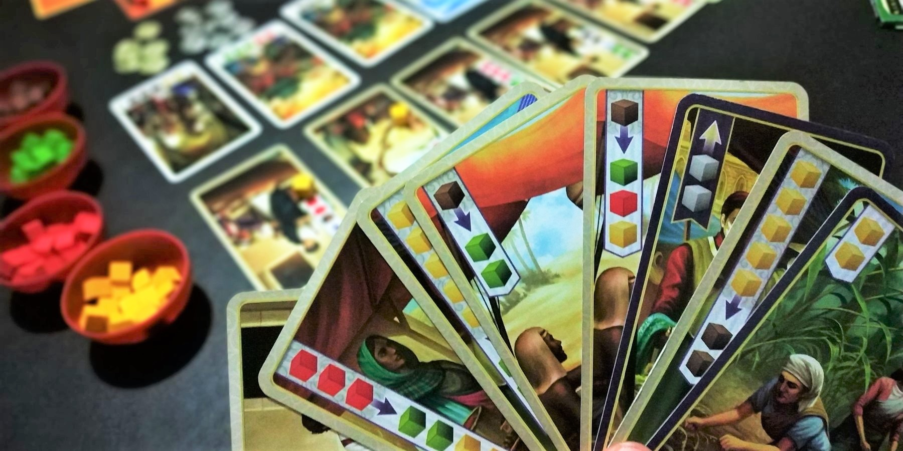

If you like Splendor, try these 3 games


Splendor is an approachable engine-building game, and it’s an amazing entry point into modern board games. It’s easy to learn, but it takes a few plays to figure out the best strategy.
If you’re looking for new games to play after Splendor, these options are slightly more complex while still being easy to learn and teach.
Century: Spice Road

You play as a spice merchant in Century: Spice Road, and your goal is to trade spice to claim the most valuable cards. This game is the perfect follow-up to Splendor as it has familiar mechanics but requires a higher level of strategy.
The setup is similar to Splendor: there are 4 types of spice you use to purchase face up cards on the table. Point cards are scoring objectives and require a combination of specific spices to buy. Market cards require you to spend a number of spice of any type, and they have effects that help you convert spice into what’s required for the point cards.
The twist is that when you acquire market cards, they go into your hand instead of in front of you like in Splendor. You need to spend a turn to play a card to use its effect. And if you want to reuse the cards you’ve already played, you need to spend a turn to Rest and pick your cards back up! You’ll need to carefully time your actions and plan further ahead than in Splendor to win this one.
While Century: Spice Road is slightly more challenging than Splendor, it’s just as easy to learn. If you’re looking for a game with similar genre and more replayability, give this one a try!
Buy Century: Spice Road on Amazon
It's a Wonderful World

It’s a Wonderful World is a pure engine-building game, and you’ll draft cards to grow your production empire. If you wish you could just have more gems in Splendor, this might be your game - there’s no limit to the amount of resources you can produce. And best of all, play is simultaneous, so there is no down-time!
Each player starts with a factory that produces basic resources. The cards you draft also produce resources, but you must pay their resource cost to build them. For instance, one card might produce 2 Blue and require 3 Yellow and 1 Green to complete. You’ll need to choose cards that work well with your current production and future needs!
Every resource is produced at the end of each of the 4 rounds. Gray is produced first, then Black, Green, Yellow, and then Blue. You can use Gray you just produced to complete a card that will produce Green later in the round, which creates opportunities to chain cards together in a satisfying way. And of course, you need to get points too. Some cards are worth points on their own, while others give points based on the other cards you’ve completed.
It’s a Wonderful World’s gameplay is straightforward, but your brain will be burning by the 3rd or 4th round. There’s some deep strategy in this game, and it’s a great introduction to games that have card drafting.
Buy It's a Wonderful World on Amazon
Sagrada

Sagrada is a spatial reasoning game in which you aim to make the best stained glass window with clear, colored dice acting as the window’s panes. This game works a different part of the brain but is also easy to learn, so it’s great alongside Splendor.
Dice are drawn from a bag and rolled on the table each round, and players take turns selecting a die to place on their board. Placing dice can be tricky though - you can’t place two dice next to each other if they have the the same color OR the same number of pips. To make things even harder, certain spaces on your board require a specific color or number!
You score points by creating the patterns shown on 3 objective cards that are randomly chosen each game. These might include “5 points per column with all different colors” or “2 points per set of 1 and 2.” Sagrada is replayable because of these cards, and you’ll have to learn how to strategize around any combination of them.
Sagrada is a solid option to try next and is a good introduction to modern spatial reasoning games. Its components are also great, with double-layered boards and tons of pretty dice!
Buy Sagrada on Amazon
Honorable Mentions
Gizmos is an engine-building game where you build an ever-growing machine to convert energy into points. On your turn, you can Pick energy spheres from an awesome marble tower, or you can spend energy to Build a new gizmo for your machine. When you Build a gizmo, you slot it under its associated action, such as Pick. From then on, if you use the Pick action to gain energy, you also activate the new gizmo! This may let you take additional actions or even generate points or extra energy. This is a fun, quick game that lets you experiment with cool combos. And did we mention the marble tower!?
Buy Gizmos on AmazonWingspan is an engine-building game with mechanics that perfectly complement its amazing bird theme. You play as an ornithologist working to make the best bird habitats. As you add birds to your Forest, Plains, or Water habitats, your actions grow in strength. You can create very satisfying combos with birds that combo with each other, and it’s awesome to fill up your board with all of the unique species. Wingspan is definitely a few steps up in complexity from Splendor, but it’s just too good to not recommend (especially with the European expansion!).
Buy Wingspan on AmazonLast Will is a unique reverse engine-building game. Your late uncle has decided in his will that his inheritance will go to whoever can spend a large sum of money as quickly as possible. This adds a funny race mechanic to the genre and flips many concepts upside-down. You can host excessive galas every week, or take unnecessary carriage rides around town. Or you can buy properties, let them deteriorate, and then sell them for nothing. It’s your money, and you’ve got to spend it so you can get more!
Buy Last Will on AmazonDid we miss any good recommendations? Have other feedback for us? Send us an email at support@spiralburst.com and let us know!